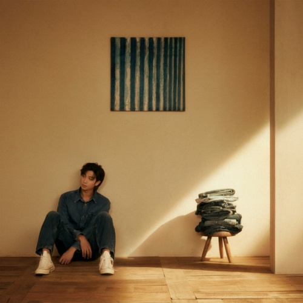

Nome verdadeiro: Kim Nam-joon (김남준).
Cidade natal: Ilsan, Goyang, Coreia do Sul.
Data de nascimento: 12 de setembro de 1994.
No BTS: líder, rapper, produtor e compositor.
Criado por RM, o Koya é um coala azul, multitalentoso e está sempre com sono. Ele dorme com a cabeça cheia de pensamentos. Tem orelhas removíveis e o nariz roxo, cor com grande significado para o BTS e suas fãs, uma vez que Taehyung relacionou a tonalidade com o amor em um show do septeto. RM desenhou páginas e mais páginas antes do resultado final e afirma que optou pelo animal porque o acha muito fofo.


RM deu início a sua carreira musical em 2007, quando ainda estava na escola. Na época, o jovem se lançou numa trajetória independente como rapper, usando o nome Runch Randa. Neste período, integrou a banda de hip hop Daenamhyup. Já em 2010, ele passou a trabalhar com a Big Hit Entertainment, então Big Hit Music, sendo o primeiro integrante do futuro BTS a entrar para a companhia.
Assim como os demais integrantes do BTS, RM é ativamente envolvido com iniciativas filantrópicas. Em 2019, mas celebrar seu aniversário de 25 anos, o artista fez uma doação de 100 milhões de won para a Escola para Surdos de Seul Samsung, que promove a educação musical de jovens com deficiência auditiva.
Lançado no dia 02 de dezembro de 2022, o álbum de estúdio Indigo é apresentado ao mundo como um diário do fim da juventude de RM, com influências muito pessoais e colaborações especiais de artistas que fizeram parte de sua história como músico.
Em apenas três meses, o projeto já contabiliza mais de 300 milhões de streams na plataforma do Spotify, se tornando o disco mais rápido de um solista sul-coreano a atingir a marca. Há muito o que comemorar, não é mesmo?!

@Esthefani_moraes